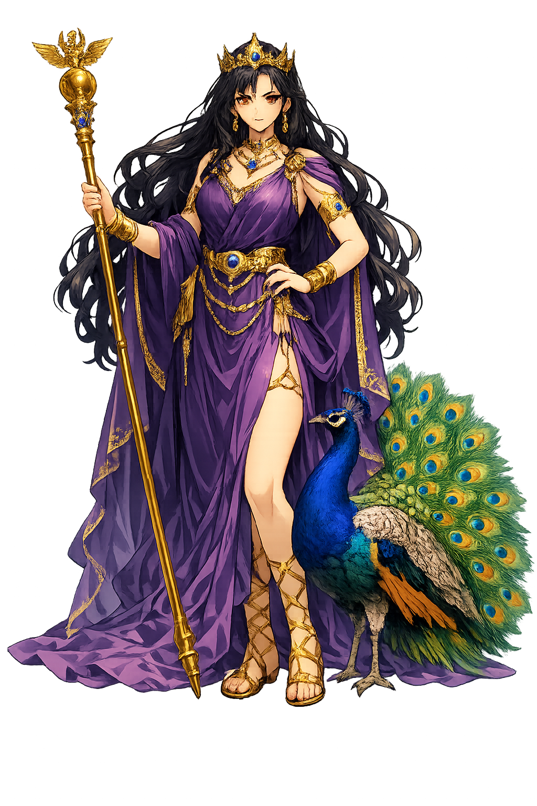

Unicode restoration and ASCII comparison
Iūnō
The name survives only in scholarly transliteration. Iūnō is the standard Roman romanisation, documented in academic sources — “From the same root as Iuppiter, the bright sky”. Its macron-length vowels preserve distinctions lost in plain ASCII.
The original script for this roman name has not yet been added to PUNICODEX. The form shown is a scholarly transliteration.
iuno
Reduced to plain iuno, the name loses everything that made it specific: macron-length vowels. What remains is an ASCII string that machines can parse but that no longer speaks with its original voice.
Iūnō
The Unicode restoration recovers what ASCII flattened. Iūnō restores macron-length vowels, returning the name to its original written dignity. The domain encodes to Punycode, but the browser displays the truth.
Iūnō.com → xn--in-wra2j.com
The non-ASCII characters in Iūnō are encoded while the ASCII remains visible. To the DNS, it is Punycode. To humanity, it is Iūnō.
How Iūnō is preserved in writing
A bespoke provenance study for Iūnō is being prepared by the PUNICODEX scholarly team.
Contribute scholarly provenance →How Iūnō was spoken
Marriage, the Mint, and the Watching Geese
Iūnō is not "Hēra with a Latin accent" but a sovereign in her own right: protector of women in every life-stage, keeper of the state's financial memory on the Capitoline, and the one goddess Rome's enemies learned to fear as the will behind the legions.
Iūnō Lucina, "she who brings to light" — the goddess women call in childbirth.
"The Warner" — her Capitoline title; Rome's mint stood in her temple, giving the world the word "money."
Her sacred geese that woke the Capitol in 390 BCE when the Gauls climbed by night.
The Queen — third of the Capitoline triad with Iūpiter and Minerva, enthroned on the city's heart-hill.
Stories of Iūnō
Roman Iūnō inherits Hēra's jealousy plots but outgrows them: in Rome she is less the wronged wife than the state's queen — a power that must be ritually persuaded, city by city, to change sides.
The Aeneid's engine is her anger: Virgil asks whether heavenly minds can hold such wrath, and answers with seven books of her persecution of Aeneas — the storm off Carthage, the madness of the Italian women, the marriage of Lavinia delayed to blood. When she finally yields, she extracts a condition: the Trojan name shall perish, and only Roman remain. She loses the war and wins the peace.
Before Rome stormed Veii in 396 BCE, the general Camillus performed the evocatio — formally calling the enemy city's Iūnō Regina to abandon Veii for a finer temple in Rome. The Veientine statue, Livy says, nodded assent. Rome conquered Italy partly by inviting its goddesses to defect: Iūnō's transferability made her the instrument of empire's softest power.
When the Gauls scaled the Capitoline cliff by night in 390 BCE, the watchdogs slept — but Iūnō's sacred geese heard them and raised such a clamour that Marcus Manlius woke and threw the first Gaul back down. Rome remembered: dogs were thereafter crucified annually, geese honoured — and Iūnō received the title Moneta, the Warner, beside whose temple the mint later stood.
On March 1, the old New Year, Roman matrons kept Iūnō Lucina's feast: husbands prayed for wives, slaves were feasted by mistresses, and the temple on the Esquiline — vowed after a plague of stillbirths — received the processions of flowering branches. It was Rome's Mother's Day and its recognition of women's collective religious power.
Iūnō is the power that must be persuaded, never merely defeated. Rome's deepest political insight is carved into her story: that legitimacy — of marriage, of money, of the state — is not seized but transferred, and only by consent. Her geese still wake at night in every institution that survives by vigilance rather than force.
Enter Extended Lore